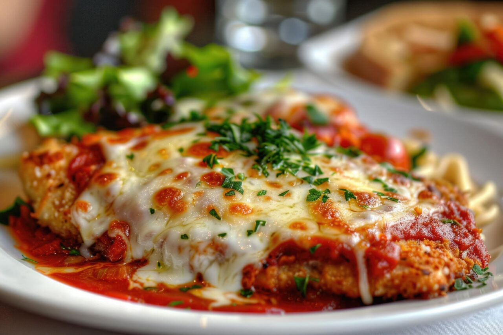

Parmegiana

Descrição
O bife à parmegiana é um clássico da culinária italiana que ganhou o
coração dos brasileiros. Combinando carne empanada, molho de tomate
caseiro e queijo gratinado, ele é a escolha perfeita para quem busca um
prato saboroso e reconfortante. Ideal para almoços em família ou jantares
especiais, esse prato une crocância, suculência e aquele toque
irresistível de queijo derretido.
O bife à parmegiana tem origem italiana, inspirado na receita da
“melanzane alla parmigiana”, feita com berinjela. Com a imigração italiana
para o Brasil, a receita foi adaptada com carne bovina, empanada e coberta
com molho de tomate e queijo, tornando-se um dos pratos mais amados nas
mesas brasileiras.
Ingredientes
- 4 bifes de alcatra ou coxão mole – carne macia ideal para empanar
- 2 ovos batidos – ajudam a fixar a farinha na carne
- 1 xícara de farinha de rosca – para empanar e dar crocância
- 1/2 xícara de farinha de trigo – base do empanamento
- Sal e pimenta-do-reino a gosto – para temperar os bifes
- 300 ml de molho de tomate caseiro – traz sabor e suculência
- 200 g de muçarela fatiada – gratina e derrete por cima do molho
- Óleo para fritar – necessário para o empanamento dourado
- Queijo parmesão ralado a gosto – finaliza com sabor marcante
Passo a Passo
-
Temperando os bifes - Tempere os bifes com sal e pimenta-do-reino.
Reserve por 10 minutos para absorver o sabor.
-
Empanando os bifes - Passe os bifes na farinha de trigo, depois nos ovos
batidos e, por fim, na farinha de rosca. Pressione bem para fixar.
-
Fritando os bifes - Aqueça o óleo e frite os bifes em fogo médio até
dourarem dos dois lados. Coloque em papel toalha para absorver o excesso
de óleo. Tempo de fritura: 5 minutos por lado
-
Montando o prato - Em uma travessa, coloque os bifes fritos. Cubra com o
molho de tomate e, em seguida, adicione as fatias de muçarela e o
parmesão ralado.
-
Levando ao forno - Leve ao forno pré-aquecido a 200°C por cerca de 15
minutos, ou até o queijo gratinar completamente.